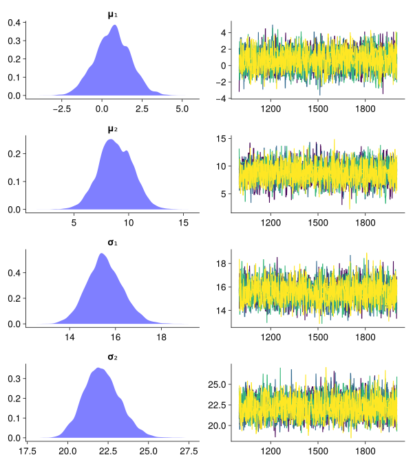

using CairoMakie
using Distributions
using DimensionalData
using LinearAlgebra
import Random
set_theme!(
fontsize=18,
Axis=(xgridvisible=false, ygridvisible=false,
topspinevisible=false, rightspinevisible=false),
)Differential Evolution MCMC (DE)
This is an implementation of the Differential Evolution MCMC algorithm and, it is based on:
Braak, C.J.F.T. A Markov Chain Monte Carlo version of the genetic algorithm Differential Evolution: easy Bayesian computing for real parameter spaces. Stat Comput 16, 239–249 (2006). https://doi.org/10.1007/s11222-006-8769-1
The algorithm is a MCMC algorithm that uses a population of chains to explore the parameter space. There is no need to tune the proposal distribution and no gradients of the posterior density are calculated to generate new proposals.
1 Loading packages
2 Generate some data from a multivariate normal distribution without correlations
The following four parameters needs to be estimated: μ₁, μ₂, σ₁, σ₂ n
Random.seed!(1234)
μ = [3.0, 10.0]
σ = [15.0, 20.0]
real_dist = MvNormal(μ, σ)
empirical_data = rand(real_dist, 200)
scatter(empirical_data[1, :], empirical_data[2, :]; color = (:blue, 0.6), markersize = 25)3 A function to sample from the prior distributions
function prior_sample!(x, prior_dists)
for i in eachindex(prior_dists)
x[i] = rand(prior_dists[i])
end
return nothing
endprior_sample! (generic function with 1 method)4 Calculate the unnormalized posterior (“fitness”) \(\rightarrow\) prior + likelihood:
function unnormalized_posterior(x, data, prior_dists)
μ₁, μ₂, σ₁, σ₂ = x
## -------- prior
if σ₁ < 0 || σ₂ < 0
return -Inf
end
prior = 0.0
for i in eachindex(prior_dists)
prior += logpdf(prior_dists[i], x[i])
end
## -------- likelihood
dist = MvNormal([μ₁, μ₂], [σ₁, σ₂])
ll = 0.0
for i in axes(data, 2)
z = @view data[:, i]
ll += logpdf(dist, z)
end
return prior + ll
endunnormalized_posterior (generic function with 1 method)5 Function to run the differential evolution MCMC algorithm
function DE_MCMC(; external_chains = 4, draws = 2000,
d = 4, N = 3*d,
γ = 2.38 / sqrt(2*d), b = 1e-4)
prior_dists = [Normal(0, 10), Normal(0, 10),
InverseGamma(2, 3), InverseGamma(2, 3)]
xₚ = zeros(d)
X = zeros(N, d)
Y = zeros(external_chains, N, d, draws)
for ext_n in 1:external_chains
## -------- initial population from prior
for i in axes(X, 1)
z = @view X[i, :]
prior_sample!(z, prior_dists)
end
## -------- MCMC
for draw in 1:draws
for i in 1:N
## -------- sample r1, r2 from 1:N without i
r1 = rand(1:N)
r2 = rand(1:N)
while true
if i != r1 && i != r2 && r1 != r2
break
end
r1 = rand(1:N)
r2 = rand(1:N)
end
## -------- proposal
for j in 1:d
e = rand(Normal(0, b))
xₚ[j] = X[i, j] + γ * (X[r1, j] - X[r2, j]) + e
end
prop = unnormalized_posterior(xₚ, empirical_data, prior_dists)
old = unnormalized_posterior(X[i, :], empirical_data, prior_dists)
r = prop - old
## -------- accept or reject
if log(rand()) < min(r, 1)
X[i, :] .= xₚ
end
end
Y[ext_n, :, :, draw] .= X
end
end
Y_dim = DimArray(Y, (chain = 1:size(Y, 1),
internal_chain = 1:size(Y, 2),
parameter = [:μ₁, :μ₂, :σ₁, :σ₂],
draw = 1:size(Y, 4));)
return Y_dim
endDE_MCMC (generic function with 1 method)6 Plotting function
function plot_mcmc(mcmc_obj)
@show start_covergence = size(mcmc_obj, :draw) ÷ 2
thin = 1
@show sample_x = start_covergence:thin:size(mcmc_obj, :draw)
samples = mcmc_obj[draw = sample_x]
names = ["μ₁", "μ₂", "σ₁", "σ₂"]
fig = Figure(; resolution = (800, 900))
for p in axes(samples, :parameter)
Axis(fig[p,1]; title = names[p])
density!(vec(samples[parameter = p]); color = (:blue, 0.5))
Axis(fig[p,2])
for ext_n in axes(samples, :chain)
for i in axes(samples, :internal_chain)
selected_samples = vec(samples[chain = ext_n, internal_chain = i, parameter = p])
lines!(sample_x, vec(selected_samples);
colormap = :viridis,
color = ext_n, colorrange = (1, size(samples, 1)))
end
end
end
fig
endplot_mcmc (generic function with 1 method)6.1 Run the algorithm
Y = DE_MCMC(; external_chains = 4, draws = 2000);6.2 Results
The different colours in the trace plots represent the different (external) chains. For each chain, several internal chains were simulated and plotted here in the same colour.
plot_mcmc(Y)start_covergence = size(mcmc_obj, :draw) ÷ 2 = 1000
sample_x = start_covergence:thin:size(mcmc_obj, :draw) = 1000:1:2000
┌ Warning: Found `resolution` in the theme when creating a `Scene`. The `resolution` keyword for `Scene`s and `Figure`s has been deprecated. Use `Figure(; size = ...` or `Scene(; size = ...)` instead, which better reflects that this is a unitless size and not a pixel resolution. The key could also come from `set_theme!` calls or related theming functions.
└ @ Makie ~/.julia/packages/Makie/iRM0c/src/scenes.jl:220
6.3 Differential Evolution MCMC with fewer internal chains (DEz)
The algorithm can be run with fewer internal chains. This is useful when the dimension of the parameter space is large. Three internal chains are usually enough in comparison to to two time the dimension of the parameter space for the original algorithm.
This implementation is based on, but does not use the snooker update:
ter Braak, C.J.F., Vrugt, J.A. Differential Evolution Markov Chain with snooker updater and fewer chains. Stat Comput 18, 435–446 (2008). https://doi.org/10.1007/s11222-008-9104-9
function DEz_MCMC(; external_chains = 4,
draws = 2000,
d = 4, N = 3,
γ = 2.38 / sqrt(2), b = 1e-4,
K = 10, M₀ = 10*d)
prior_dists = [Normal(0, 10), Normal(0, 10),
InverseGamma(2, 3), InverseGamma(2, 3)]
@assert M₀ > max(d, N)
Y = DimArray(zeros(external_chains, draws, N, d),
(chain = 1:external_chains,
draw = 1:draws,
internal_chain = 1:N,
parameter = [:μ₁, :μ₂, :σ₁, :σ₂]);)
Z = DimArray(zeros(M₀+draws*N, d),
(draw = 1:M₀+draws*N, parameter = [:μ₁, :μ₂, :σ₁, :σ₂]);)
X = zeros(N, d)
xₚ = zeros(d)
for ext_n in 1:external_chains
for i in 1:M₀
z = @view Z[i, :]
prior_sample!(z, prior_dists)
end
X .= Z[1:N, :]
M = M₀
for draw in 1:draws
for _ in 1:K
for i in 1:N
## -------- sample r1, r2 from 1:M without i
r1 = rand(1:M)
r2 = rand(1:M)
while true
if i != r1 && i != r2 && r1 != r2
break
end
r1 = rand(1:M)
r2 = rand(1:M)
end
## -------- proposal
for j in 1:d
e = rand(Normal(0, b))
xₚ[j] = X[i, j] + γ * (Z[r1, j] - Z[r2, j]) + e
end
prop = unnormalized_posterior(xₚ, empirical_data, prior_dists)
old = unnormalized_posterior(X[i, :], empirical_data, prior_dists)
r = prop - old
## -------- accept or reject
if log(rand()) < min(r, 1)
X[i, :] .= xₚ
end
end ## internal chains
end ## K
Z[draw = M+1 .. M+N] = X
M += N
Y[chain = ext_n, draw = draw] .= X
end
end ## external_chains
return Y
endDEz_MCMC (generic function with 1 method)6.4 Run the algorithm
Yz = DEz_MCMC();6.5 Results
plot_mcmc(Yz)start_covergence = size(mcmc_obj, :draw) ÷ 2 = 1000
sample_x = start_covergence:thin:size(mcmc_obj, :draw) = 1000:1:2000
┌ Warning: Found `resolution` in the theme when creating a `Scene`. The `resolution` keyword for `Scene`s and `Figure`s has been deprecated. Use `Figure(; size = ...` or `Scene(; size = ...)` instead, which better reflects that this is a unitless size and not a pixel resolution. The key could also come from `set_theme!` calls or related theming functions.
└ @ Makie ~/.julia/packages/Makie/iRM0c/src/scenes.jl:220